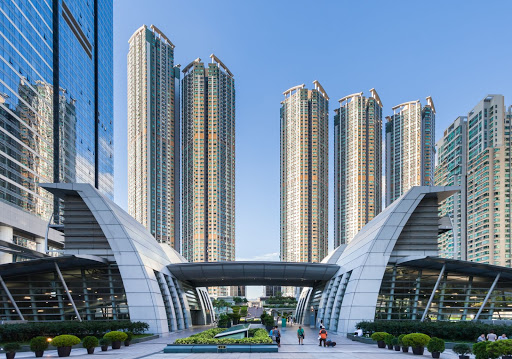

乘車方式
- 八達通
- 單程車票
- 特別版八達通
香港特別行政區位於中國東南方，早期為英國的殖民地。城市的建築構成密集的天際線，不僅擁有大量人口，更充滿發展動能，亦是全球金融重鎮與主要港口。香港素有「購物天堂」的美稱，許多服飾店都提供量身訂製服務，另外還有人聲鼎沸的廟街夜市，蘊含著道地的香港情懷，越夜越熱鬧。
 持有成人單程票的各站票價
持有成人單程票的各站票價
這是一種先進的電子票務系統，適用於香港多種交通工具，讓你的旅程變得簡單輕鬆。每張八達通均內置一塊微型晶片，適用於各種票務或繳費處理器。乘客在車站過閘時只需將八達通在收費器上輕觸即可。八達通有成人、長者、小童及個人卡四種。多用途的八達通適用於港鐵、機場快綫、輕鐵、巴士、小輪及其他公共交通工具，免卻準備輔幣和找贖的麻煩。
除八達通 外，你亦可選擇使用單程票乘搭港鐵。單程票可於購票當日使用一次前往預先選定之車站，車費按車程距離釐定。單程票分成人及特惠兩種，你可於任何港鐵站內的售票機購買。特惠票適用於3-11歲的小童及65歲或以上的長者。在任何情況下，12歲或以上的學生如使用單程票，均以成人車費計算。
八達通配飾及手錶造型時尚，美觀實用，是不錯的選擇。乘客可在各港鐵及輕鐵客務中心選購。由八達通有限公司發行之八達通配飾於各港鐵及輕鐵客務中心有售。
市區綫現代化列車是香港地鐵歷史上車齡最高的一代列車
車廂內部
(相似:高雄-真愛碼頭 台北-西門)
旺角是位於香港九龍中部、油尖旺區北部的地區，是香港著名的旅遊和購物區之一。旺角新舊樓宇林立；舊住宅樓宇地鋪多為商店或餐廳。以彌敦道為界，購物中心集中在東面，而西面則以傳統民生活動為主。區內交通發達，有巴士及港鐵（東鐵綫、荃灣綫和觀塘綫）直達，更有專線小巴通宵行駛，假日時彌敦道及西洋菜南街一帶經常水洩不通。旺角的人口密度極高，平均密度為每平方公里130,000人，現時容積率約4倍，新型摩天大廈、舊式唐樓、繁華街道與排檔縱橫交錯分布，是世界一大都市景觀。
(相似:高雄-高雄國際機場 台北-松山機場站)
機場站是一個位於香港新界離島區赤鱲角香港國際機場地面運輸中心內，屬於港鐵機場快綫的鐵路車站，為機場的主要聯外車站，1998年7月6日啟用。機場站在港鐵系統中是處於最西端的車站。機場站共分3層，頂2層為月台、客務中心、行李處理設施、員工空間及連接航廈的行人橋，為方便乘客出入，機場站並不設任何閘機；最底層則為行李處理設施及地面運輸中心。由於機場站採用側式月台設計，故此車站大廳的主要設施位於月台旁邊。機場站在境月台樓層，1號月台的車站大廳，除了少量鋪設外，大部分採用了清水混凝土的建築工藝，而3號月台則只有天花位置採用。港鐵公司為了方便旅客，機場站是機場快綫中唯一一個不設閘機的車站，乘客可直接將機場內的行李手推車推進車站月台，但亦由於此，乘客可能會由機場站乘車遊覽一轉後於機場站下車，從而搭「霸王車」，另外亦有部分旅客會貪方便，趁博覽館方向列車停泊時，經兩邊月台及列車來往一、二號航廈離港大廳（這不構成逃票行為）。由機場站乘搭機場快綫的乘客，需在其他機場快綫車站出閘時支付車資；而由市區或博覽館站前往該站的乘客，可自願性將已使用的機場快綫車票棄置於車站內設置的車票收集箱，亦可自行留為紀念。值得一提的是，除了機場快綫車站內售票機外，其他所有港鐵售票機都不能購買機場快綫車票，有關車票需在客務中心或其他指定售票處購買。
(相似: 台北-台北101/世貿站)
九龍站是一個位於香港九龍油尖旺區西九龍填海區雅翔道，屬於港鐵東涌綫與機場快綫的鐵路車站，亦是機場快綫唯一一個在九龍的車站，鄰近廣深港高速鐵路香港西九龍站，並位處於西鐵綫的柯士甸站以西，於1998年6月22日啟用。由於車站與上蓋綜合發展計畫Union Square結合成同一建築物，所以車站大部份位置均與上蓋物業相連。九龍站共有8層，其中有6層屬於車站範圍的公共開放部份，5樓為連接Union Square的出入口及空中花園，U3層為車站與連接圓方的出入口，而G層為機場快綫市區預辦登機大廳及東涌綫大廳，L2層為機場快綫大廳及月台，L4層則為東涌綫月台。另有2層密閉空間原本用作東部走廊東九龍綫預留樓層。
(相似:高雄-左營站 台北-龍山寺站)
黃大仙站是一個位於香港九龍黃大仙區黃大仙龍翔道，屬於港鐵觀塘綫的鐵路車站，由艾格恩／協興聯營體承建，於1979年10月1日隨修正早期系統啟用。車站設有兩個收費區大堂，其中一個近E出入口的大堂因使用量偏低及環保前提下，祇會於早上繁忙時間、農曆新年假期及黃大仙誕將會開放作入閘用途，以疏導人潮。不過由於有乘客投訴該處入閘機長期關閉，未有開放使用，故此自2012年5月末起將該處部份閘機開放時間延長至晚上8時。近E出入口的大堂雖設有兩條扶手電梯，但由於該大堂只設有入閘機，故只有近入閘機的一條扶手電梯會被啟用作下行用途，另一條扶手電梯則長年停用。在太子站亦有相似的設計，但有關大堂是全日開放的。
迪士尼站喺香港荃灣區大嶼山東北部嘅竹篙灣，係港鐵迪士尼綫嘅總站，喺2005年8月1號配合迪士尼綫通車而啟用，個站淨係設有1個月台，亦都裝咗月台閘門。車站用咗維多利亞時代風格，並且係一個開放式車站，設備及裝飾亦都仿照19世紀嘅格局，用嚟配合香港迪士尼樂園度假區嘅設計。車站大堂迪士尼站車站大堂設於地面，其中比較特別嘅地方，主要係售票機喺車站建築物外牆，以及出入閘機及客務中心位於出口之處，係香港嘅鐵路車站較少出現嘅設計。同時，站內只設有1組兩條來回嘅扶手電梯往返車站大堂及月台，而大堂兩側設有升降機及斜道方便輪椅及嬰兒車嘅乘客使用。
海洋公園站採用架空車站設計，去配合嗰段走線嘅高架橋設計，海洋公園擴建計劃亦有預留位置畀港鐵用。海洋公園站係南港島線唯一採用側式月台嘅車站。海洋公園站外牆以唔同深淺度嘅藍色玻璃為主要飾面，呈波浪形。面積約2,700平方米嘅車站大廳亦以藍色為主調，柱身以海豹、企鵝、水母同海豚等海洋生物圖案作裝飾，天花板會有垂吊藝術裝置，營造海洋感覺。係繼迪士尼站後，另外一座以主題公園為主題設計嘅港鐵車站。車站設有大型停車場，用作泊車轉乘用途。